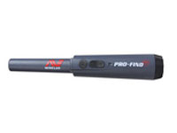
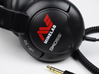
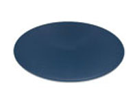
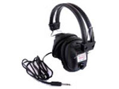

Home
Home Copyright© 2013
The X-TERRA 705 Gold Pack is a versatile gold detector featuring innovative VFLEX technology and an accurate preset Prospecting Mode making it the obvious choice for an entry level gold detector.
The small, robust 18.75 kHz Double-D Elliptical coil is unrivalled at finding small gold nuggets. Its ability to find different sized gold at different depths is as simple as changing to other 18.75 kHz high frequency coil sizes.
The X-TERRA 705 Gold Pack is designed for quick assembly, efficient mobility and features a lightweight, balanced efficient mobility and features a lightweight, balanced frame allowing your.
The X-TERRA 705 Gold Pack performs efficiently on four standard AA batteries.
| X-TERRA 705 Gold Pack | |
|---|---|
| Overview | Multi-purpose versatile detector with advanced features and functions for finding gold nuggets, deeper and with more accurate discrimination. Like having 2 detectors in 1. |
| Search Modes | Prospecting |
| Soil/Timings | -- |
| Frequency | 18.75kHz |
| Iron Reject | Off(All Metal) Iron Mask(1 to 20) |
| Ground Balance | Auto and Manual |
| Tune(Noise Cancel) | Auto and Manual(5 channels) |
| Threshold | Yes(varies in pitch and volume in prospecting mode) |
| Sensitivity | Manual(1 to 30) |
| RX Gain | -- |
| Standard Coil | 10x5-inch Double-D 18.75kHz |
| Headphones | Optional |
| Batteries | 4xAA cells(not included) |
| Key Technologies | VFLEX, 18.75kHz |
|  PRO-FIND 25 |
 Headphones, Koss UR-30 |
 Skidplate, 10" Elliptical Blue |
 Headphones, RPG |
The Eureka Gold’s exclusive three frequency (3F) technology makes prospecting easier! With 6.4 kHz for maximum depth, 20 kHz for general detecting and with the super-sensitive 60 kHz, gold miners can find the smallest gold nuggets that others are missing.
The ACCU-TRAK technology, with Automatic Ground Balance and Tracking eliminates noise from the mineralised ground in goldfields. This switchable two speed Tracking and its discrimination capability allows for greater accuracy on target selection for different sized nuggets.
The Eureka Gold comes with a NiMH rechargeable battery pack plus an alkaline battery pack (for 8 standard AA batteries). An ideal option when detecting in remote locations.
| X-TERRA 705 Gold Pack | |
|---|---|
| Overview | Easy to use, yet powerful, gold detector with proven reliable performance for enthusiastic gold prospectors. Like having 3 detectors in 1. |
| Search Modes | -- |
| Soil/Timings | -- |
| Frequency | 6.4kHz, 20kHz and 60kHz |
| Iron Reject | Off(All Metal),Linear Control |
| Ground Balance | Fixed, Slow Track, Fast Track |
| Tune(Noise Cancel) | -- |
| Threshold | Yes(varies in pitch and volume) |
| Sensitivity | Manual Linear Control |
| RX Gain | -- |
| Standard Coil | 10x5-inch Double-D |
| Headphones | Optional |
| Batteries | Rechargeable NiMH pack 8xAA alkaline packs |
| Key Technologies | VLF, 3F, ACCU-TRAK |
PRO-FIND 25 |
Headphones, Koss UR-30 |
Skidplate, 10" Elliptical Blue |
Headphones, RPG |
The Eureka Gold’s exclusive three frequency (3F) technology makes prospecting easier! With 6.4 kHz for maximum depth, 20 kHz for general detecting and with the super-sensitive 60 kHz, gold miners can find the smallest gold nuggets that others are missing.
The ACCU-TRAK technology, with Automatic Ground Balance and Tracking eliminates noise from the mineralised ground in goldfields. This switchable two speed Tracking and its discrimination capability allows for greater accuracy on target selection for different sized nuggets.
The Eureka Gold comes with a NiMH rechargeable battery pack plus an alkaline battery pack (for 8 standard AA batteries). An ideal option when detecting in remote locations.
| X-TERRA 705 Gold Pack | |
|---|---|
| Overview | Multi-purpose versatile detector with advanced features and functions for finding gold nuggets, deeper and with more accurate discrimination. Like having 2 detectors in 1. |
| Search Modes | Prospecting |
| Soil/Timings | -- |
| Frequency | 18.75kHz |
| Iron Reject | Off(All Metal) Iron Mask(1 to 20) |
| Ground Balance | Auto and Manual |
| Tune(Noise Cancel) | Auto and Manual(5 channels) |
| Threshold | Yes(varies in pitch and volume in prospecting mode) |
| Sensitivity | Manual(1 to 30) |
| RX Gain | -- |
| Standard Coil | 10x5-inch Double-D 18.75kHz |
| Headphones | Optional |
| Batteries | 4xAA cells(not included) |
| Key Technologies | VFLEX, 18.75kHz |
The bedding was hardly able to cover it and seemed ready to slide off any moment. His many legs, pitifully thin compared with the size of the rest of him, waved about helplessly as he looked. "What's happened to me?"
He thought. It wasn't a dream. His room, a proper human room although a little too small, lay peacefully between its four familiar walls.